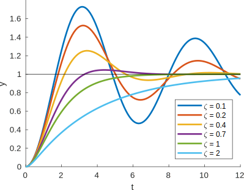
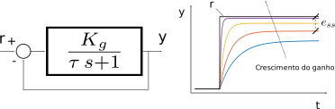
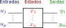
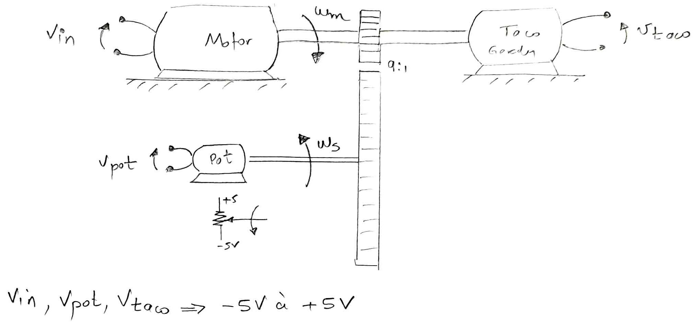
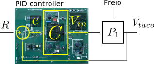
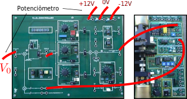
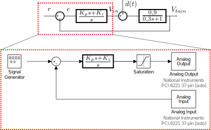

Controle de Sistemas Mecânicos
Criado por André de S. Mendes


Primeiros passos
- Navegue pelas páginas utilizando as setas de controle à direita.
- Acesse diretamente os tópico através do menu à esquerda (☰).
- Os diferentes tópicos estão distribuídos na horizontal.
- O conteúdo de cada tópico está na vertical.
- Utilize o navegador Chrome.
- Acesse: CSM Printable.
- Abra as opções de impressão (Ctrl + P)
- Escolha o destino Salvar como PDF.
- Escolha Layout como Paisagem.
- Escolha Margem como Nenhum.
- Marque a opção Gráficos de segundo plano.
- Clique em Imprimir.
Introdução ao curso
|
Modal |
Milhões [TKU] |
Participação [%] |
|---|---|---|
|
Rodoviário |
485.625 |
61,1 |
|
Ferroviário |
164.809 |
20,7 |
|
Aquaviário |
108.000 |
13,6 |
|
Dutoviário |
33.300 |
4,2 |
|
Aéreo |
3.169 |
0,4 |
|
Total |
794.903 |
100,0 |
CNT: Movimentação anual da matriz de transporte de carga no Brasil em 2016.
MCTI: Emissões de CO 2 no Brasil em 2010.
Liang, 2016: Campo de pressão no plano de simetria de um comboio de dois caminhões para diferentes distâncias de separação.


Huang, 2018: Fluxograma para otimização do perfil de velocidade.

Laplace
Considere o carro de massa \(m\) e coeficiente de arrasto \(c\). Para uma dada velocidade inicial \(v(0)\), qual é a expressão da velocidade em função do tempo \(v(t)\) para uma entrada \(f(t)=1\)?
\(m \, \dot{v} = f(t) - c \,v\)
Transformada de Laplace
Definição
\[\mathscr{L} \left[ f(t) \right] = \int_0^\infty e^{-st} f(t) \, dt = F(s)\]
Exemplo: Transformada de Laplace de \(f(t) = 1\)?
\[ F(s) = \int_0^\infty e^{-st} dt = \left. \frac{e^{-s t}}{-s} \right|^{\infty}_{0} = \left. \frac{e^{-s t}}{s} \right|^{0}_{\infty}\]
\[ F(s) = \frac{e^0}{s} - \frac{e^{-\infty}}{s} = \frac{1}{s}\]
Função de transferência
Verifique a estabilidade das funções de transferência:
- \(G(s) = \frac{(s - 3)}{(s + 1)(s+2)}\)
- \(G(s) = \frac{1}{(s+1)(s^2 + 4 s + 13)}\)
- \(G(s) = \frac{1}{(s-1)}\)
Determine os ganhos \(K\) e \(K_g\) da função de transferência #2.
Malha aberta X Malha fechada

Desempenho
- Acompanhamento do sinal de referência. \(x \rightarrow r \therefore e \rightarrow 0\)
- Rejeição de perturbação
- Tolerância aos erros de modelagem
Aplicação do controlador
Aplicação do controlador

Aplicação do controlador

Reservatório

Reservatório
\(V(t + \Delta t) - V(t) = \Delta t \, q_i - \Delta t q_o\)
\[ \lim_{\Delta t \to 0} \frac{V(t + \Delta t) - V(t)}{\Delta t} = \lim_{\Delta t \to 0} \left( q_i - q_o \right)\]
\( \frac{dV}{dt} = q_i - q_o \)
Supondo área transversal constante ao longo da altura e modelo de válvula de saída: \(q_o = C \, h\)
\( A \frac{dh}{dt} = q_i - C \, h \)
\( A \frac{dh}{dt} + C \, h = q_i \)
\( \mathscr{L} \left[ A \frac{dh}{dt} + C \, h \right] = \mathscr{L} \left[ q_i \right] \rightarrow \left( A \, s + C \right) H(s) = Q_i(s) \)
\(G(s) = \frac{H(s)}{Q_i(s)} = \frac{1}{A \, s + C} \)
Estabilidade absoluta
\(G(s) = \frac{a_m s^m + a_{m-1} s^{m-1} + \, \cdots \, + a_1 s + 1}{(s+p_1)(s+p_2) \, \cdots \, (s+p_n)} \)

Se todos os polos \(s_k = -p_k\) do sistema estiverem no semi plano esquerdo (SPE), a função de transferência \(G(s)\) é estável.
Estabilidade absoluta
\(G(s) = \frac{a_m s^m + a_{m-1} s^{m-1} + \, \cdots \, + a_1 s + 1}{(s+p_1)(s+p_2) \, \cdots \, (s+p_n)} \)
Qual é a resposta no tempo para uma entrada U(s) = 1?
\(G(s) = \frac{Y(s)}{U(s)} \rightarrow Y(s) = G(s) U(s)\)
\(Y(s) = G(s) = \frac{r_1}{s + p_1} + \frac{r_2}{s + p_2} + \cdots + \frac{r_n}{s + p_n}\)
\( \mathscr{L}^{-1} \left[ Y(s) \right] = \mathscr{L}^{-1} \left[ \frac{r_1}{s + p_1} + \frac{r_2}{s + p_2} + \cdots + \frac{r_n}{s + p_n} \right]\)
\(y(t) = r_1 {\rm e}^{-p_1 \, t} + r_2 {\rm e}^{-p_2 \, t} + \cdots + r_n {\rm e}^{-p_n \, t} \)
Basta que um polo \(s_k = - p_k\) tenha parte real positiva para que o sistema seja instável.
Ganho da função de transferência
\(G(s) = \frac{p_m s^m + p_{m-1} s^{m-1} + \, \cdots \, + p_1 s + p_0}{q_n s^n + q_{n-1} s^{n-1} + \, \cdots \, + q_1 s + q_0}\)
Primeira forma normal
\(G(s) = \color{red}{\frac{p_m}{q_n}} \frac{1 \, s^m + \frac{p_{m-1}}{p_m} s^{m-1} + \, \cdots \, + \frac{p_1}{p_m} s + \frac{p_0}{p_m}}{1 \, s^n + \frac{q_{n-1}}{q_n} s^{n-1} + \, \cdots \, + \frac{q_1}{q_n} s + \frac{q_0}{q_n}}\)
Segunda forma normal
\(G(s) = \color{red}{\frac{p_0}{q_0}} \frac{\frac{p_m}{p_0} s^m + \frac{p_{m-1}}{p_0} s^{m-1} + \, \cdots \, + \frac{p_1}{p_0} s + 1}{\frac{q_m}{q_0} s^n + \frac{q_{n-1}}{q_0} s^{n-1} + \, \cdots \, + \frac{q_1}{q_0} s + 1}\)
\(K = \color{red}{\frac{p_m}{q_n}}\) é a constante de ganho.
\(K_g = \color{red}{\frac{p_0}{q_0}}\) é a constante de ganho de frequência zero (\(s = 0\)).
Sistemas de primeira ordem
Considere o sistema de aquecimento de líquido por meio de vapor da figura a seguir cujas vazões de entrada e de saída são idênticas. A temperatura de entrada do líquido é Ti(t) e a de saída é T(t), a mesma do interior do tanque, pois há uma agitação perfeita do líquido. A vazão de vapor pode ser alterada pela abertura u(t) da válvula (0 a 100%).
Um engenheiro mecânico decidiu identificar a função de transferência aproximada do sistema, por meio de ensaios experimentais. Para tal, ele aplicou um sinal de teste u(t) (do tipo degrau) de amplitude 10 (equivalente a 10% de abertura da válvula) e registrou o comportamento de T(t), obtendo o gráfico de resposta a seguir, cujo ruído presente é devido ao sensor. Determine:
- A função de transferência que pode representar o modelo desse sistema;
- Os parâmetros dessa função de transferência;
- O tempo de acomodação;
- A resposta analítica;


Comentários
- Dificuldades em se obter as funções no tempo.
- Vamos eleger funções típicas e comparar a resposta simulada com a resposta real, quando sujeitas à mesma entrada.
- Se as respostas forem parecidas, a função candidata é eleita como modelo do sistema.
\( \tau \dot{y}(t) + y(t) = K_g \, u(t)\)
\( \mathscr{L} \left[ \tau \dot{y}(t) + y(t) \right] = \mathscr{L} \left[ K_g \, u(t) \right]\)
\( \tau \, s \, Y(s) + Y(s) = K_g \, U(s)\)
\( P(s) = \frac{Y(s)}{U(s)}= \frac{K_g}{\tau \, s + 1}\)
Resposta ao degrau

\(P(s) = \frac{Y(s)}{U(s)} \therefore Y(s) = P(s) U(s)\)
\(Y(s) = \frac{K_g}{\tau \, s + 1} \frac{A}{s}\)
\(\mathscr{L}^{-1} \left[ Y(s) \right] = \mathscr{L}^{-1} \left[ \frac{A \, K_g}{s (\tau \, s + 1)} \right]\)
\(y(t) = A \, K_g (1 - \rm{e}^{-t/\tau})\)
Ganho de frequência zero

\(K_g = \frac{y(t \to \infty)}{u(t \to \infty)}\)
\(\frac{A \, K_g (1 - \rm{e}^{-\infty/\tau})}{A} = K_g\)
\(K_g\) é a razão entre a saída e a entrada quando o tempo tende ao infinito.
Constante de tempo
\(y(t=\tau) = A \, K_g \left( 1 - \rm{e}^{-\tau/\tau} \right) \)
\(y(t=\tau) = A \, K_g 0{,}63 \)
\(y(t=\tau) = 0{,}63 y(t \to \infty)\)
\(\tau\) é o tempo que a saída demora para alcançar 63% do valor para o qual ela converge.
Tempo de acomodação
\(y(t_{ac}) = 0{,}98 A \, K_g\)
\(y(t_{ac}) = A \, K_g (1 - \rm{e}^{-t_{ac}/\tau})\)
\(\rm{e}^{-t_{ac}/\tau} = 0{,}02\)
\(t_{ac} \approx 3{,}9 \tau\)
\(t_{ac} \approx 4 \tau\)
Sistemas de segunda ordem
A figura abaixo representa a resposta ao degrau unitário de um sistema de segunda ordem. Determine a partir do gráfico da figura: o tempo de pico; o sobressinal (em porcentagem); e o tempo de acomodação. Determine também a função de transferência.


\( \ddot{y}(t) + p \dot{y}(t) + q y(t) = K u(t) \)
\( \mathscr{L} \left[ \cdot \right] \rightarrow \left( s^2 + p \, s + q \right) Y(s) = K \, U(s)\)
\( P(s) = \frac{Y(s)}{U(s)} = \frac{K}{s^2 + p \, s + q}\)
\( P(s) = \frac{K}{s^2 + 2 \alpha s + \omega_n^2} = \frac{K}{s^2 + 2 \zeta \omega_n s + \omega_n^2} = \frac{K_g \omega_n^2}{s^2 + 2 \zeta \omega_n s + \omega_n^2} \)
Sistema superamortecido com 2 polos reais distintos
\( \alpha^2 > \omega_n^2 \) ou \( \zeta > 1 \)
Sistema com amortecimento crítico com 2 polos reais iguais
\( \alpha^2 = \omega_n^2 \) ou \( \zeta = 1 \)
Sistema subamortecido com 2 polos complexos conjugados
\( 0 < \alpha^2 < \omega_n^2 \) ou \( 0 < \zeta < 1 \)
Aproximação

Variação do grau de amortecimento \(\zeta\)
Índice de desempenho
Tempo de pico: \(t_p = \frac{\pi}{\omega_d}\) onde \(\omega_d = \sqrt{\omega_n^2 - \alpha^2} \), \(\zeta = \frac{\alpha}{\omega_n}\)
Tempo de acomodação: \(t_{ac} = \frac{4}{\alpha} \)
Tempo de subida: \(t_{s} = \frac{\pi - \phi}{\omega_d} \) onde \(\phi = \arctan \left( \frac{\omega_d}{\alpha} \right) \)
Máximo sobressinal: \(M_{p} = {\rm e}^{-\pi \left( \alpha/\omega_d \right)} = {\rm e}^{-\pi \left( \zeta / \sqrt{1 - \zeta^2} \right)} \)
Considere a função de transferência: \(P(s) = \frac{25}{s^2 + 6 s + 25}\)
Esboçe a resposta ao degrau.

Erros estacionários
Determine o erro estacionário dos seguintes sistemas para as entradas:
\(1/s\), \(1/s^2\) e \(1/s^3\)
\(Y(s) = H(s) \, Z(s)\) (1)
\(Z(s) = G(s) \, E(s)\) (2)
utilizando (1): \(E(s) = R(s) - Y(s) \rightarrow E(s) = R(s) - H(s) \, Z(s)\)
utilizando (2): \(E(s) = R(s) - H(s) \, Z(s) \rightarrow E(s) = R(s) - G(s) \, H(s) \, E(s)\)
\(E(s) \left(1 + G(s) \, H(s) \right) = R(s) \rightarrow E(s) = \frac{R(s)}{\left(1 + G(s) \, H(s) \right)}\)
utilizando (2): \(E(s) = \frac{R(s)}{\left(1 + G(s) \, H(s) \right)} \rightarrow \frac{Z(s)}{G(s)} = \frac{R(s)}{\left(1 + G(s) \, H(s) \right)}\)
\( T(s) = \frac{Z(s)}{R(s)} = \frac{G(s)}{\left(1 + G(s) \, H(s) \right)} \)
Tipo do sistema
\(A(s) = G(s) H(s) = \frac{K_g (\lambda_1 s + 1)(\lambda_2 s + 1) ...}{s^N(\tau_1 s + 1)(\tau_2 s + 1) ...}\)
\(N\) = número de pólos de \(A(s)\) na origem
\(N\) = tipo do sistema
\(A_1(s) = \frac{s + 1}{s + 2}\) \(\rightarrow\) Tipo 0
\(A_2(s) = \frac{s + 1}{s \left(s + 2 \right)}\) \(\rightarrow\) Tipo 1
\(A_3(s) = \frac{s + 1}{s^2 \left(s + 2 \right)}\) \(\rightarrow\) Tipo 2
Sinais típicos
Efeito do integrador - Posição

O integrador \(\frac{1}{s}\) consegue eliminar
o erro estacionário de posição quando:
Tipo 0 \(\rightarrow\) Tipo 1.
Efeito do integrador - Velocidade
O integrador \(\frac{1}{s}\) consegue eliminar
o erro estacionário de velocidade quando:
Tipo 1 \(\rightarrow\) Tipo 2.
Efeito do integrador - Aceleração

O integrador \(\frac{1}{s}\) não consegue
eliminar o erro estacionário de aceleração quando:
Tipo 1 \(\rightarrow\) Tipo 2.
Efeito do integrador
Efeito do ganho
O aumento do ganho \(K_g\) diminui o erro estacionário.
Tabela de erros

Utilizando um sistema de primeira ordem, mostre que o erro estacionário dos sistemas do tipo 0 para uma entrada degrau \(\frac{A}{s}\) é igual a
\(e_{ss} = \frac{A}{1 + K_g}\)
Controlador PID
Considere a função de transferência do sistema LJ:
\( G(s) = \frac{0{,}9}{0{,}3 s + 1} \)
Projete um controlador PI para o sistema LJ de forma que o tempo de acomodação em malha fechada seja \(\tau_{mf} = \frac{\tau}{2}\).
\(C(s) = \frac{U(s)}{E(s)} = K_p + \frac{K_i}{s} + K_d \, s\)
\(U(s) = K_p E(s) + \frac{K_i}{s}E(s) + K_d \, s E(s)\)
\(\mathscr{L}^{-1} [ \cdot ] \rightarrow u(t) = \underbrace{K_p e(t)}_{\text{presente}} + \underbrace{K_i \int^{t_i}_0 e(t) \, dt}_{\text{passado}} + \underbrace{K_d \frac{d}{dt}e(t)}_{\text{futuro}}\)
Controladores
- Técnicas indiretas (LGR, Bode, ...)
- Técnicas empíricas (Ziegler-Nichols, ...)
- Técnicas algébricas (Cancelamento, ...)
Estratégia
- Uma boa função de transferência para o ramo direto é a de um integrador (\(\frac{1}{s}\)).
- Nunca se cancelam polos instáveis, pois o cancelamento é inexato.
Projeto PD
Para plantas de 2a ordem com polo na origem
\(C(s)P(s) = \left( K_p + K_d \, s \right) \frac{K_g}{s(\tau s + 1)} \quad = \quad \frac{K_g K_p}{s} \frac{\frac{K_d}{K_p}s + 1}{\tau s + 1}\)
Se \(\color{red}{\frac{K_d}{K_p} = \tau} \quad \rightarrow \quad C(s) \, P(s) = \frac{K_g K_p}{s} \quad \rightarrow \quad T(s) = \frac{C(s) P(s)}{1 + C(s)P(s)} = \frac{K_g K_p}{s + K_g K_p} \)
\( T(s) = \frac{K_{m.f.}}{\tau_{m.f.}s + 1} = \frac{1}{\frac{1}{K_g K_p}s + 1} \)
Projeto PI
Para plantas de 1a ordem
\(C(s)P(s) = \left( \frac{K_p s + K_i}{s} \right) \frac{K_g}{\tau s + 1} \quad = \quad \frac{K_g K_i}{s} \frac{\frac{K_p}{K_i}s + 1}{\tau s + 1}\)
Se \(\color{red}{\frac{K_p}{K_i} = \tau} \quad \rightarrow \quad C(s) \, P(s) = \frac{K_g K_i}{s} \quad \rightarrow \quad T(s) = \frac{C(s) P(s)}{1 + C(s)P(s)} = \frac{K_g K_i}{s + K_g K_i} \)
\( T(s) = \frac{K_{m.f.}}{\tau_{m.f.}s + 1} = \frac{1}{\frac{1}{K_g K_i}s + 1} \)
Projeto PID
Para plantas de 2a ordem sem polo na origem
\(C(s)P(s) = \left( \frac{K_d s^2 + K_p s + K_i}{s} \right) \frac{K}{s^2 + a s + b} = \frac{K_d \left( s^2 + \frac{K_p}{K_d} s + \frac{K_i}{K_d} \right)}{s} \frac{K}{s^2 + a s + b}\)
Se \(\color{red}{\frac{K_p}{K_d} = a}\) e \( \color{red}{\frac{K_i}{K_d} = b}\):
\(C(s) \, P(s) = \frac{K K_d}{s} \quad \rightarrow \quad T(s) = \frac{C(s) P(s)}{1 + C(s)P(s)} = \frac{K \, K_d}{s + K \, K_d} \)
\( T(s) = \frac{K_{m.f.}}{\tau_{m.f.}s + 1} = \frac{1}{\frac{1}{K \, K_d}s + 1} \)
Espaço de Estados
Representação
Modelo no Espaço de Estados (SS):
\(\dot{x} = f(x,u,t)\)
\(y = g(x,u,t)\)
O estado de um sistema é a menor quantidade de informação que é suficiente para determinar de forma única a configuração do sistema.
Diagrama
Modelo linear invariante no tempo (LTI) no SS:
\(\dot{x} = Ax + Bu\)
\(y = Cx + Du\)

Exemplo
Represente no espaço de estados:
\(f(t) = m \ddot{p} + b \dot{p} + k p\)
A partir da F.T. - Caso 1
\(\frac{Y(s)}{U(s)} = \frac{1}{as^2 + bs + c}\)
\(a Y(s) s^2 + b Y(s) s + c Y(s) = U(s)\)
\(\mathscr{L}[\cdot] \rightarrow a \ddot{y}(t) + b \dot{y}(t) + c y(t) = u(t)\)
A partir da F.T. - Caso 1 (Cont.)
\(a \ddot{y}(t) + b \dot{y}(t) + C y(t) = u(t)\)
Escolhendo os estados \(x_1 = y(t)\) e \(x_2 = \dot{y}(t)\)
\( \begin{eqnarray} \dot{x}_1 &=& x_2 \nonumber \\ \dot{x}_2 &=& (u - b x_2 - c x_1)/a \nonumber \\ y &=& x_1 \nonumber \end{eqnarray} \)
Modelo linear:
\( \begin{eqnarray} \left[ \begin{array}{c} \dot{x}_1 \\ \dot{x}_2 \end{array} \right] &=& \left[ \begin{array}{cc} 0 & 1 \\ -c/a & -b/a \end{array} \right] \left[ \begin{array}{c} x_1 \\ x_2 \end{array} \right] + \left[ \begin{array}{c} 0 \\ 1/a \end{array} \right] u \nonumber \\ y &=& \left[ \begin{array}{cc} 1 & 0 \end{array} \right] \left[ \begin{array}{c} x_1 \\ x_2 \end{array} \right] + [0] u \nonumber \end{eqnarray} \)
A partir da F.T. - Caso 2
\(\frac{Y(s)}{U(s)} = \frac{ds + e}{as^2 + bs + c} \frac{W(s)}{W(s)}\)
\( (a s^2 + b s + c) W(s) = U(s)\)
\(\mathscr{L}[\cdot] \rightarrow a \ddot{w}(t) + b \dot{w}(t) + c w(t) = u(t)\)
\( (ds + e) W(s) = Y(s)\)
\(\mathscr{L}[\cdot] \rightarrow d \dot{w}(t) + e w(t) = y(t)\)
A partir da F.T. - Caso 2 (Cont.)
\(a \ddot{w}(t) + b \dot{w}(t) + c w(t) = u(t)\)
\(d \dot{w}(t) + e w(t) = y(t)\)
Escolhendo os estados \(x_1 = w(t)\) e \(x_2 = \dot{w}(t)\)
\( \begin{eqnarray} \dot{x}_1 &=& x_2 \nonumber \\ \dot{x}_2 &=& (u - b x_2 - c x_1)/a \nonumber \\ y &=& d x_2 + e x_1 \nonumber \end{eqnarray} \)
Modelo linear:
\( \begin{eqnarray} \left[ \begin{array}{c} \dot{x}_1 \\ \dot{x}_2 \end{array} \right] &=& \left[ \begin{array}{cc} 0 & 1 \\ -c/a & -b/a \end{array} \right] \left[ \begin{array}{c} x_1 \\ x_2 \end{array} \right] + \left[ \begin{array}{c} 0 \\ 1/a \end{array} \right] u \nonumber \\ y &=& \left[ \begin{array}{cc} e & d \end{array} \right] \left[ \begin{array}{c} x_1 \\ x_2 \end{array} \right] + [0] u \nonumber \end{eqnarray} \)
Exercício 1
Represente no espaço de estados considerando as posições como saída do sistema:

\( \begin{eqnarray} m_1 \ddot{x}_1 &=& - k_2 (x_1 - x_2) - b_2 ( \dot{x}_1 - \dot{x}_2 ) - k_1 x_1 \nonumber \\ m_2 \ddot{x}_2 &=& - k_2 (x_2 - x_1) - b_2 ( \dot{x}_2 - \dot{x}_1 ) + f(t) \nonumber \end{eqnarray} \)
Exercício 2
Represente no espaço de estados:

Exercício 3
Represente no espaço de estados:

Considere \(h_1\) e \(h_2\) como saídas e \(f_1\) como entrada. As vazões são dadas por \(f_{12} = K_{12} h_1\) e \(f_2 = K_2 h_2\).
Linearização
Função de transferência
\(G(s) = \frac{K_g}{\tau s + 1}\)
Espaço de estados
\( \begin{eqnarray} \dot{x} &=& A x + B u \nonumber \\ y &=& C x + D u \nonumber \end{eqnarray} \)
Controladores: P, PI, PD, PID
Controladores: Alocação, LQR
Modelo no Espaço de Estados (Não linear):
\(\dot{x} = f(x,u,t)\)
\(y = g(x,u,t)\)
É possível aproximar o sistema não linear por um sistema LTI?
\( \dot{x} = f(x,u,t) \qquad \xrightarrow[\text{Linearização}]{\text{Aproximação}} \qquad \dot{x} = A x + B u \)
Motivação
- Projeto de controladores
- Verificar estabilidade e comportamento dinâmico
- Simulação mais rápida (Hardware in the loop)
Inspiração

Equação não linear: \(y = x^2\)
Inspiração
Equação não linear: \(y = x^2\)
Região de interesse em torno de \((x_{in},y_{in})=(6,36)\).
Inspiração

Equação não linear: \(y = x^2\)
Região de interesse em torno de \((x_{in},y_{in})=(6,36)\)
\(y_{linear} = y_{in} + 2 x_{in} (x - x_{in}) \qquad \rightarrow \qquad y_{linear} = 36 + 12 (x - 6)\)
Série de Taylor
Uma função não linear \(y = f(x)\) pode ser representada por uma série de Taylor em torno do ponto \((\overline{x},\overline{y})\)
\(y=f(x)=f(\overline{x})+(x-\overline{x})\left.\frac{d f}{d x}\right|_{x=\overline{x}}+\frac{1}{2 !}(x-\overline{x})^{2}\left.\frac{d^{2} f}{d x^{2}}\right|_{x=\overline{x}}+\cdots\)
Se a variação \( ( x - \overline{x} ) \) for pequena, podemos truncar a série de Taylor no termo de primeira ordem
\(y=f(x)=f(\overline{x})+(x-\overline{x})\left.\frac{d f}{d x}\right|_{x=\overline{x}}\)
\(y - \overline{y} = K(x - \overline{x})\)
\(\Delta y = K \Delta x\)
Onde \(\qquad K = \left.\frac{d f}{d x}\right|_{x=\overline{x}}\) \(\qquad \Delta y = y - \overline{y}\) \(\qquad \Delta x = x - \overline{x}\)
Exemplos
1) Linearize a função \(f(x) = x^2\) em torno do ponto \(x_{op} = 4\).
2) Determine o valor aproximado de \(y=\sqrt{10}\) por meio da linearização, sabendo que \(\overline{y} = \sqrt{9}\)
Linearização de sistema dinâmicos
Os sistemas dinâmicos não lineares são escritos como
\(\begin{aligned} \dot{x}_{1} &= f_{1}\left(x_{1}, x_{2}, \cdots x_{n}, u_{1}, u_{2}, \cdots u_{m}\right) \\ \dot{x}_{2} &= f_{2}\left(x_{1}, x_{2}, \cdots x_{n}, u_{1}, u_{2}, \cdots u_{m}\right) \\ \vdots &= \vdots \\ \dot{x}_{n} &=f_{n}\left(x_{1}, x_{2}, \cdots x_{n}, u_{1}, u_{2}, \cdots u_{m}\right) \end{aligned}\)
Logo, teremos as variações
\(\begin{array}{ccc}{\Delta x_{1}=\left(x_{1}-\overline{x}_{1}\right)} & & {\Delta u_{1}=\left(u_{1}-\overline{u}_{1}\right)} \\ {\Delta x_{2}=\left(x_{2}-\overline{x}_{2}\right)} & & {\Delta u_{2}=\left(u_{2}-\overline{u}_{2}\right)} \\ {\vdots} & \qquad \qquad & {\vdots} \\ {\Delta x_{n}=\left(x_{n}-\overline{x}_{n}\right)} & & {\Delta u_{m}=\left(u_{m}-\overline{u}_{m}\right)}\end{array}\)
Linearização de sistema dinâmicos
Os sistemas dinâmicos linearizados são escritos como
\(\begin{array}{c} \begin{aligned} \frac{d}{d t}\left(\Delta x_{1}\right)=& a_{11} \Delta x_{1}+a_{12} \Delta x_{2}+\cdots+a_{1 n} \Delta x_{n}+\\ & b_{11} \Delta u_{1}+b_{12} \Delta u_{2}+\cdots+b_{1 m} \Delta u_{m} \end{aligned} \\ \begin{aligned} \frac{d}{d t}\left(\Delta x_{2}\right)=& a_{21} \Delta x_{1}+a_{22} \Delta x_{2}+\cdots+a_{2 n} \Delta x_{n}+\\ & b_{21} \Delta u_{1}+b_{22} \Delta u_{2}+\cdots+b_{2 m} \Delta u_{m} \end{aligned} \\ \vdots \\ \begin{aligned} \frac{d}{d t}\left(\Delta x_{n}\right)=& a_{n 1} \Delta x_{1}+a_{n 2} \Delta x_{2}+\cdots+a_{m n} \Delta x_{n}+\\ & b_{n 1} \Delta u_{1}+b_{n 2} \Delta u_{2}+\cdots+b_{n m} \Delta u_{m} \end{aligned} \end{array}\)
Onde
\(a_{i j}=\left.\frac{\partial f_{i}}{\partial x_{j}}\right|_{\overline{x}, \overline{u}} \mathrm{e} \quad b_{i j}=\left.\frac{\partial f_{i}}{\partial u_{j}}\right|_{\overline{x}, \overline{u}}\)
Exercício 1
Considere o problema de se obter um modelo linear aproximado da seguinte equação diferencial que representa o comportamento dinâmico do nível \(h(t)\) de um tanque com uma vazão de alimentação \(u(t)\) e uma saída proporcional à \(\sqrt{h(t)}\)
\(\dot{h}(t) = - \alpha \sqrt{h(t)} + \beta u(t)\)
Considere o ponto de linearização \(\overline{h}\)=0,4m e as constantes \(\alpha\)=0,7 e \(\beta\)=1,3.
Exercício 2
Obtenha o modelo linear aproximado da seguinte equação de estado não linear que possui dois estados \((x_1,x_2)\) e duas entradas \((u_1,u_2)\). Considere o ponto de linearização em torno de \(\overline{x}_1\)=1 e \(\overline{x}_2\)=2. Apresente a equação de estado na forma matricial.
\(\begin{array}{l}{\frac{d}{d t}\left(x_{1}(t)\right)=-\sqrt{x_{1}(t)}-x_{2}(t)+u_{2}(t)} \\ {\frac{d}{d t}\left(x_{2}(t)\right)=-x_{2}(t)+\left(u_{1}(t)\right)^{2}}\end{array}\)
Projeto por alocação de polos
Regulador linear quadrático
Observador de estados
Sistema LJ
O sistema

Esquemático
Detalhes

Fonte

Potenciômetro

Ligação em malha aberta
Em malha aberta, o que acontece com a velocidade do rotor quando o freio é acionado?
Diagrama de blocos

Configurações possíveis

Estrutura de controle
Controlador e Sistema
PID Controller

Controlador e malha

Ligação em malha fechada
Em malha fechada, o que acontece com a velocidade do rotor quando o freio é acionado?
Simulink Desktop Real Time
Entrada e saída
Placa PCI 6221-37 da National Instruments
Instruções
- Baixar arquivo Simulink Desktop Real-Time (template) no Moodle
- Salvar arquivo no disco local. Ex.: "Documentos/MATLAB"
- Conectar cabo
- Abrir Matlab/Simulink
Pinos da placa PCI-6221-37
Exemplo 1 - Pilha
Exemplo 2 - Led
Exemplo 3 - Entrada e saída
Exemplo 4 - Entrada e saı́da com integrador

Exemplo 5 - Conexão entre dois PCs
Identificação do sistema LJ
Funções candidatas
\(P(1) = \frac{V_{taco}}{V_{in}} = \frac{K_1}{\tau s + 1}\)
\(P(2) = \frac{V_{pot}}{V_{in}} = \frac{K_2}{s(\tau s + 1)}\)
Instruções
- Baixar arquivo Simulink Desktop Real-Time (template) (Semana 4) no Moodle
- Baixar arquivo Identificacao.zip (Semana 5) no Moodle
- Salvar arquivo no disco local. Ex.: "Documentos/MATLAB"
- Conectar cabo
- Abrir Matlab/Simulink
Controlador do sistema LJ
Projeto do controlador
Considere o projeto PI por cancelamento de polo e zero feito em aula: \(K_p\)=2,2 e \(K_i\)=7,3.
- Implemente o controlador no Simulink em tempo real.
- Avalie o acompanhamento do sinal de referência.
- Avalie a rejeição de perturbação.
Diagrama Simulink
Polos dominantes
Maya Cap. 6.10.5, página 95.


Lugar das raízes
Obtenha o gráfico do lugar das raízes para as funções de transferência abaixo:
\(G1 = \frac{1}{(s+1)}\)
\(G2 = \frac{1}{((s+1)(s+4))}\)
\(G3 = \frac{(s+4)}{(s+1)}\)
\(G4 = \frac{1}{((s+1)(s+2)(s+3))}\)
\(G5 = \frac{(s+3)}{((s+1)(s+2))}\)
\(G6 = \frac{1}{((s+1)(s+2)(s+3)(s+4))}\)
Considerações
- Simetria em relação ao eixo real
- LGR no eixo real
- Número de ramos do LGR é igual ao número de polos
- Quando \(K=0\), os polos são iguais aos polos de malha aberta
- Quando \(K \rightarrow \infty\), os polos tendem ao infinito ou ao zero
- Atração do LGR pelos zeros e repulsão pelos polos
- Ramos que vão para o infinito: Número de assíntotas = (número de polos) - (número de zeros)
Projeto 1
Projeto PI de velocidade do sistema LJ
\(P(s) = \frac{K_g}{\tau s + 1} = \frac{0{,}9}{0{,}3s+1}\)
Deseja-se \(e_{ss}\)=0 (Degrau) e \(\tau_{m.f.} = \tau/2\)
Projeto 2
Projeto PD de posição do sistema LJ
\(P(s) = \frac{10}{s(0{,}3 s + 1)} = \frac{100/3}{s+10/3}\)
Deseja-se \(e_{ss}\)=0 (Degrau) e \(\tau_{m.f.} = \tau/2\)
Projeto 3
Projeto LEAD de posição do sistema LJ
\(P(s) = \frac{10}{s(0{,}3 s + 1)} = \frac{100/3}{s+10/3}\)
\(C(s) = \frac{(\lambda_1 s + 1)}{(\lambda_2 s + 1))} = \frac{(s + z)}{s+p}\)
Deseja-se \(e_{ss}\)=0 (Degrau) e polos dominantes em \(-4 \pm 4j\)